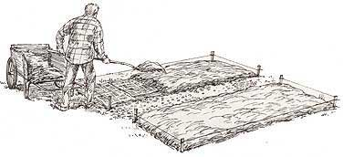

ELAYNE SEARS
Choose a mulch to match your soil and plant type: Poor soil and hungry vegetables demand a nourishing mulch like grass clippings or compost, while bark or buckwheat hulls are good choices in a flower garden or on paths.